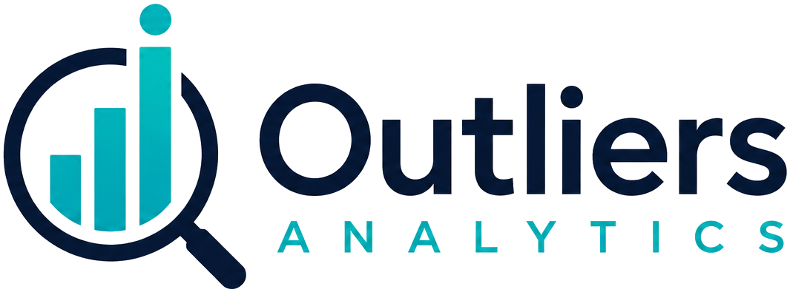

Plataforma eleitoral
Painéis para acompanhar resultado, abstenção e comparação territorial.
- Leitura por município, zona ou seção
- Indicadores fáceis de cruzar
- Visual pronto para uso público ou interno

Nossas soluções transformam dados públicos em decisões mais rápidas e mais confiáveis para você se tornar um ponto fora da curva.

Serviços
Painéis para acompanhar resultado, abstenção e comparação territorial.

Ferramentas para coletar, tratar e reaproveitar dados públicos.

Leitura de padrão, contexto e mudança sem apressar conclusão.
Projetos
Dados
Abertos
Brasil
Pacote Python para buscar e organizar bases brasileiras.
Cellmate
Biblioteca Python para gerar arquivos Excel mais legíveis.
MarkoWizard
Biblioteca Python e app web para otimização de portfólio de Markowitz.
statsjunk
Biblioteca Python de estatística de uso geral, sem dependência de framework.